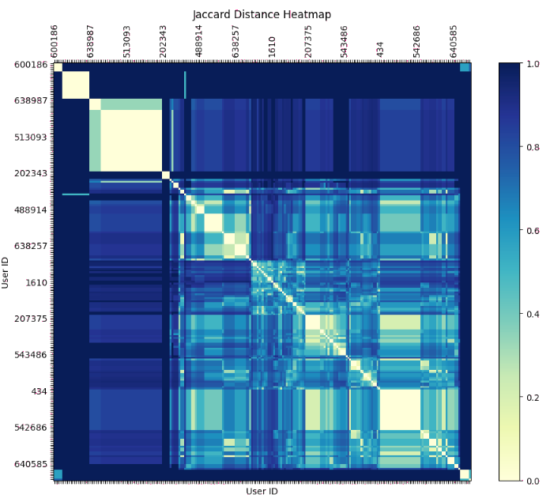
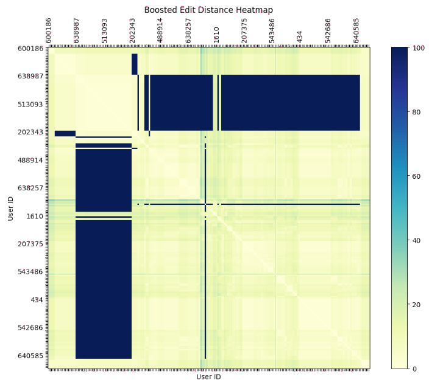
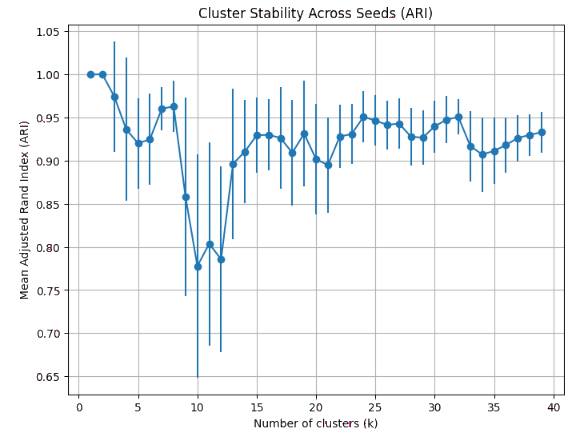

TLDR (click to show/hide)
When you know your dataset has underlying structure but don't know what labels to use, clustering is valuable tool to extract these. But if your data is not numeric, more commonly know algorithms like K-means won't work. This article gives a brief interactive introduction to K-means, its abstraction to K-medoids, and a real-world example of how I used K-medoids at work to cluster non-numeric user data.
A common problem encountered when analyzing data is the need to group it without any predefined labels. For example, a news service might want to group articles into categories like "sports", "politics", or "entertainment" without any prior knowledge of what those categories are. This general type of problem is called clustering.
This article will give you a brief introduction to one of the most popular clustering algorithms, K-means, through an interactive example. But we'll soon see that although powerful, K-means is limited in its ability to cluster data of certain types and will need to be generalized to work with them.
K-Means Clustering
The general idea of K-means is to take a set of data points and group them into K clusters which are as similar to each other as possible. The algorithm works by starting with K random points (called centroids) and assigning each data point to the cluster whose centroid is closest to it. By measuring the distance between each point and its cluster's centroid, we can determine how much error there is in our clustering, and update the centroids to minimize that error.
This is done with two steps:
-
Assignment Step: Assign each data point to the cluster whose centroid is closest to it.
-
Update Step: Update the centroids of each cluster to be the average of all the points assigned to it.
By iteratively moving the centroids and reassigning the points, we can minimize the error in our clustering, stopping the algorithm when the centroids no longer change. Experiment with this yourself below by clicking to add K-many initial centroids and stepping through the algorithm. The larger circles represent the current centroids while the X's represent the true centroids for the current clusters of points. The error lines show the distance between each point and its assigned centroid. Try to see if you can find an initial set of centroids that doesn't need to be updated!
Converged!
Some things you might have noticed while exploring:
- The algorithm always converges. There is no way to initialize the points such that they move around forever.
- The final clustering depends on where the initial centroids are placed. We might converge to different solutions for the same K value. (The algorithm only finds local optima).
- It is possible that some clusters end up with no points.
- The regions of each cluster have an interesting shape (these are called Voronoi cells).
So what if you want to know how many "real clusters" there are? What should the "correct" K-value to start with be? This is where we can run many experiments with different K values and see how the clustering changes. Keeping track of the total error (the sum of the distances between each point and its assigned centroid) for the final clustering, we can see how the error drops as we increase K.
We expect that if K = 1, the error will be very high and if K = N (where N is the number of points), the error would be 0. Somewhere in between, there should be a sharp decrease in the error when we reach a K-value near the "true" number of clusters. This is called the elbow method. You can see in the example below that the error drops sharply when K = 3, which indicates that once we have 3 clusters, we are able to explain most of the variance in the data.
Below is the elbow curve for the set of points you just explored. Try refreshing the data points to see how the elbow changes for different numbers of true clusters. If the dataset's true number of clusters is very high (like 100), you will likely not see this elbow.
But now another question: If using the K-means algorithm requires I calculate the centroid of a subset of my data, how can I cluster data that is not numeric? If the data I'm using is something like text or images, what does it mean to calculate the "centroid" of those data points? Enter K-medoids...
K-Medoids Clustering (K-Means for Other Things)
K-medoids is a sort of generalization of K-means which works differently in two main ways:
-
Instead of calculating the Euclidean distance between two points (which may not be possible depending on our data type), we instead provide
our own distance matrix which represents whatever we want define as the distance between two points.
- Because we may not know how to define any arbitrary point between a pair of others given our data type (ex: what does it mean to be half way between the strings "cat" and "dog"?)
we instead use the actual data points as our centroids. This means that the centroids are always one of the points in our dataset.
This distance matrix which we can define however we like gives us the power to cluster data of any type. For example, if we wanted to cluster strings, we could define the distance between two strings as the number of edits needed to convert one into the other (the Levenshtein distance). But if we want to, we could even choose one of many other options that better suits the data we are working with.
Because we can be creative and come up with some notion of distance between almost any type of data, this opens us up to many new possibilities. This is best illustrated with a real world example that I've recently worked at at CharterUP.
Case Study: Permissions and Roles
The problem my team is currently facing is that after years of (trying to) maintain an in-house roles and permissions system, we've ended up in a situation where there are many "roles" that correspond to what should actually be "permisssions". Instead of roles reflecting the real-life job positions that people at the company have, they instead take the form of something like can_view_this_table or can_edit_that_thing. As a consequence, everyone at the company may have a dozen or so of these "roles" which can easily get out of sync with other people that should be having the exact same experience in the application.
Investigating this a bit further, I found that despite hiring for only a couple dozen unique positions, there were 86 unique role configurations among users! This makes it difficult to debug issues where a user might be missing a permission or have one they shouldn't. There are frequently problems that are resolved by simply copying the roles of one user who a feature works for to another user for which it doesn't.
There are a few ways we could go about solving this problem:
-
Start from the top-down by going through an org-chart and redefining roles from scratch to match up with those.
The difficulty with this is that differences in the org-chart may not correspond to actual differences in how those
users use the application and the true org-chart is split across many teams internal definitions of what roles are.
-
Start from the bottom-up by clustering the various role configurations that people already use to see where minor differences can be adjusted
and then redefine the roles to match up with those clusters.
The second option here is nice because we don't need to go piece together what the true org-chart should be; we can just get an approximation of those true application personas by looking at the data we already have. This is where K-medoids comes in.
Without revealing any particular internal details of the roles at our company, I can share that these "role configurations" I'm working with look like lists of integer role_id's (ex: [5, 7, 32, 405]). Some user might have the same roles as someone else plus or minus a couple random ones that should really be shared between the two.
To be able to run K-medoids, we need to define some notion of distance between a pair of these role configurations. I tried both the Jaccard index (the ratio area of overlap and area of union of two sets) and the Levenshtein (edit) distance which we mentioned earlier. For each, I created a distance matrix representing the pairwise distances between all the role configurations across users:

I found the latter to be a bit better at generating understandable clusters when testing and so went with that one. After some initial iterations of clustering and generating elbow curves, I found that around 20 clusters was a good number. But generating this many clusters was still grouping users that I knew should have been distinct, For example, SDRs and SDR Managers explicitly need to have different permissions, but because the role configurations for each of them were both short (each consisting of only one or two each), the edit distance betwween them was small enough that they ended up in the same cluster.
To address this issue, I was able to manipulate particular pairs within the distance matrix to embed some of this outside knowledge. This resulted in the following "boosted" distance matrix which forces distinct clusters for these pairs by setting their distance to an arbitrarily high value:

In this manipulated distance matrix, you can see blocks of users that are explicitly marked for separate clusters.
With this change, the clusters fit the hard constraints of specific role distinctions, but the elbow curve was difficult to parse. Although there is some true number of clusters in this case, there was enough noise and overlap in the data, that extracting a precise number between 20 and 30 was difficult. To help with this, I checked the "cluster stability" for each K-value. As you'll recall in the K-means section above, these clustering algorithms are guaranteed to converge, but only to local optima. By re-running the algorithm many times with different starting centroids, we can see if the clusters converge to the same solution each time (more stable) or if they change with high variance (which would indicate they are not our "real" clusters):
